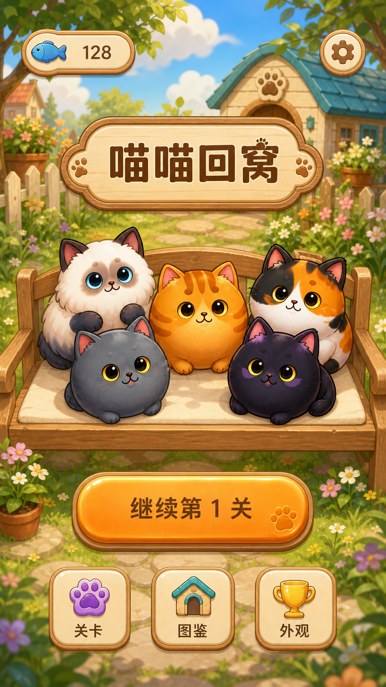
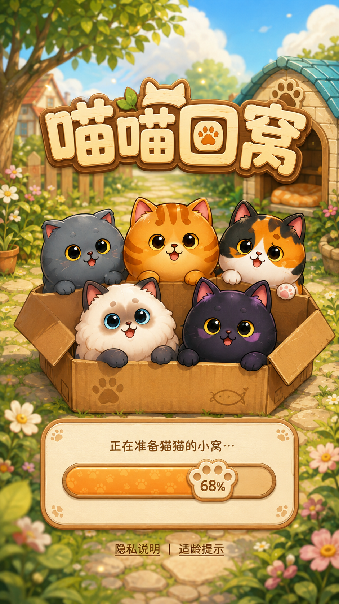
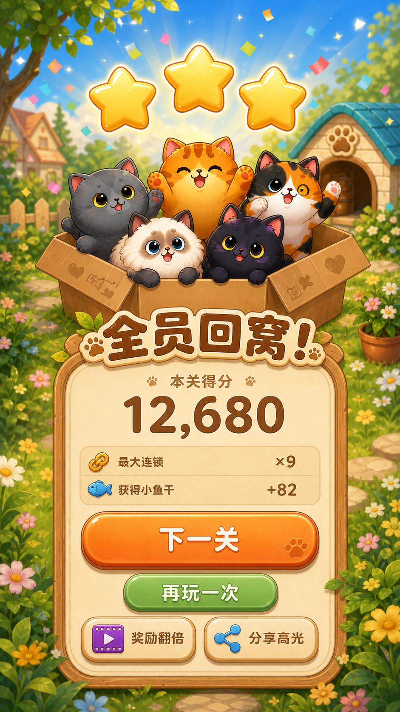
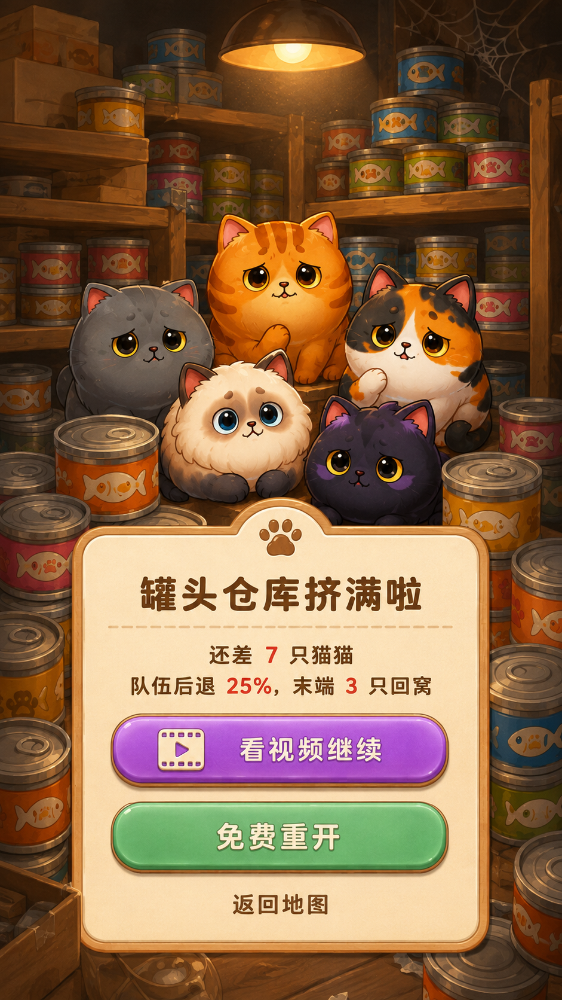
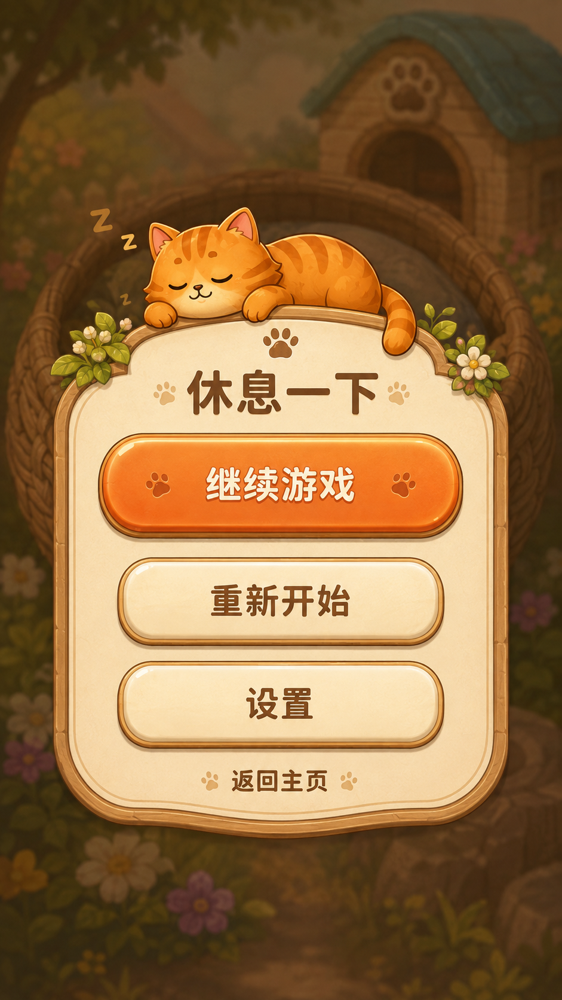
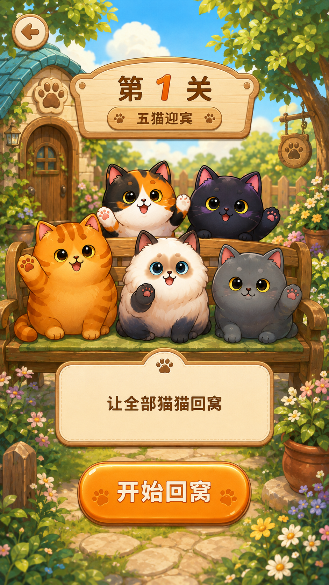
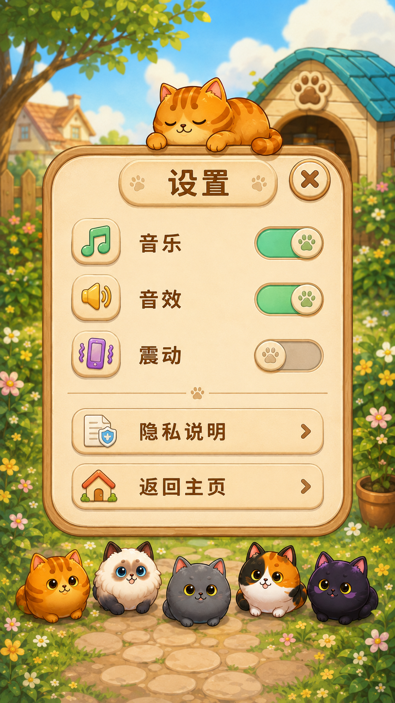
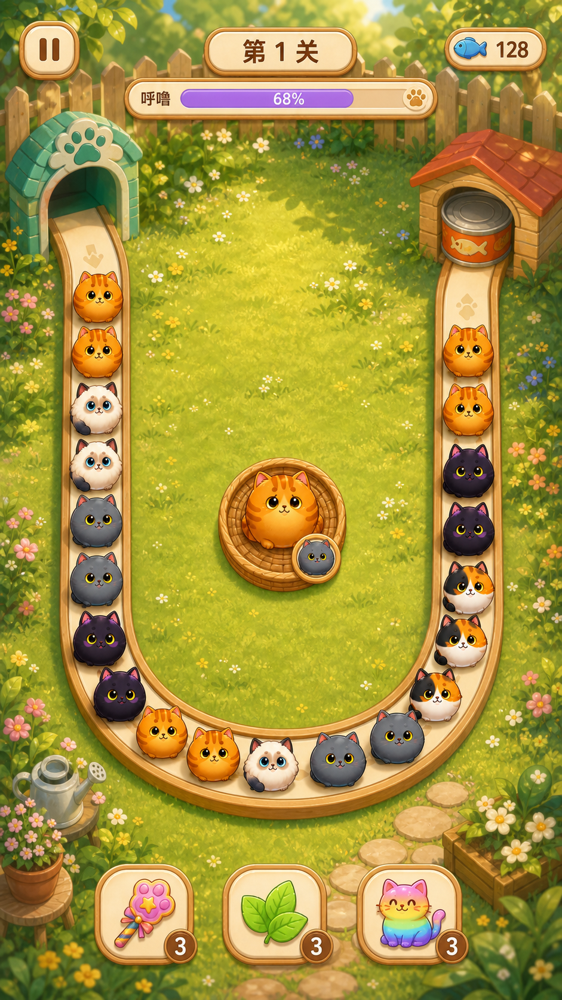
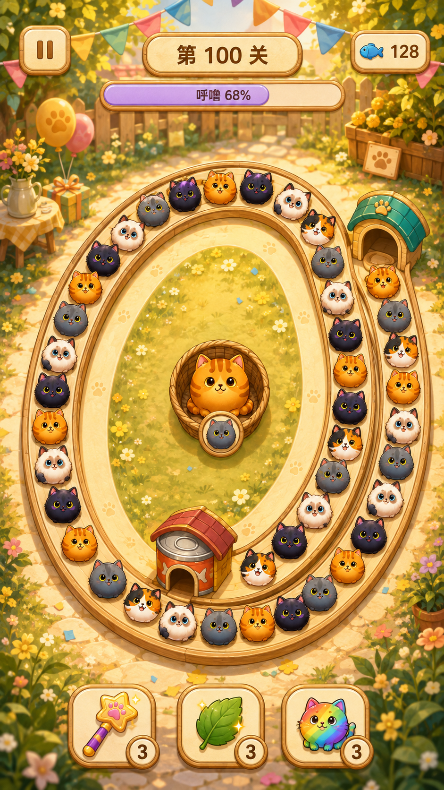

p01_home
需要返工
顶部安全区不足；图鉴/外观图标错误沿用房子/奖杯，需要改为卡片/猫窝，不作为复现基准
原图 · 提示词
p00_loading
图片自检通过（非 Figma 验收）
五猫齐全，进度与隐私/适龄入口可读；合规正文须在后续 Figma/实现阶段使用正式文本
原图 · 提示词
p06_win
图片自检通过（非 Figma 验收）
五猫、三颗星、分数、下一关、重玩和次级翻倍/分享可见，文字居中；待 Figma 重建精确字体与尺寸
原图 · 提示词
p07_revive_ad
图片自检通过（非 Figma 验收）
无次数上限文案，复活/免费重开/返回地图齐全，奖励内容可读；动态广告状态尚未实现
原图 · 提示词
p05_pause
图片自检通过（非 Figma 验收）
继续/重开/设置/返回齐全，暖灰遮罩与按钮层级清晰；背景仅作示意，不是关卡基线
原图 · 提示词
p03_prepare_first
需要返工
五猫与无广告/无道具首关准备符合要求；左上返回按钮侵入顶部安全区，须下移后重检
原图 · 提示词
p10_settings
图片自检通过（非 Figma 验收）
音乐音效为开、震动为关；设置行对齐、开关方向清楚，隐私与返回齐全
原图 · 提示词
l001
需要返工
单入口单老巢开放 U 轨道成立；HUD 侵入顶部安全区，猫窝尺寸/位置与蓝图偏差，需要叠图校准
原图 · 提示词
l100
需要返工
老巢被移至下方，内旋轨道形状与批准几何不符；禁止据此批量生成或复现
原图 · 提示词